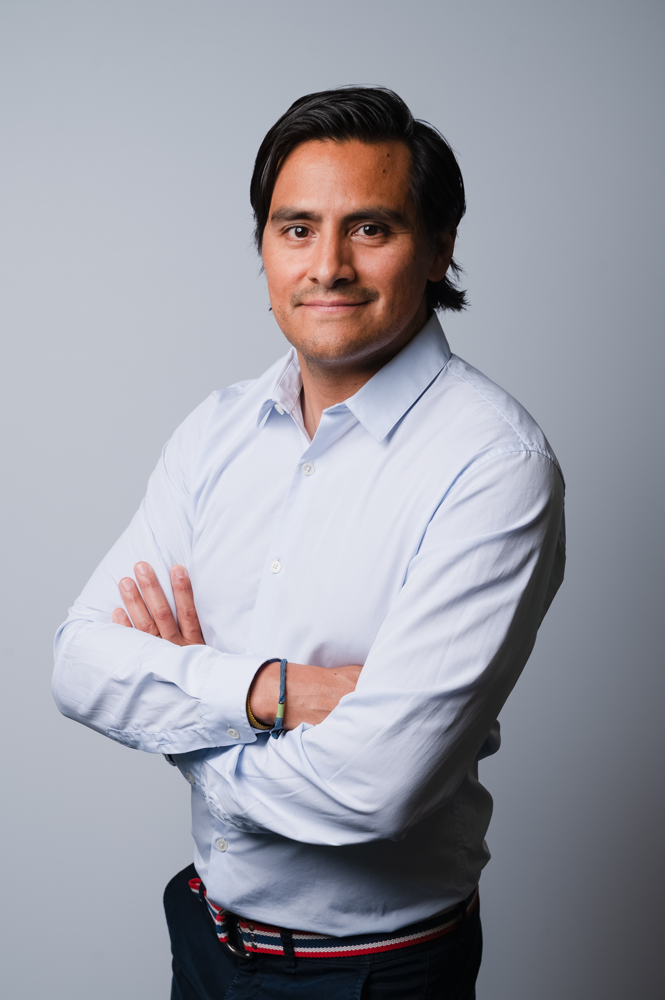
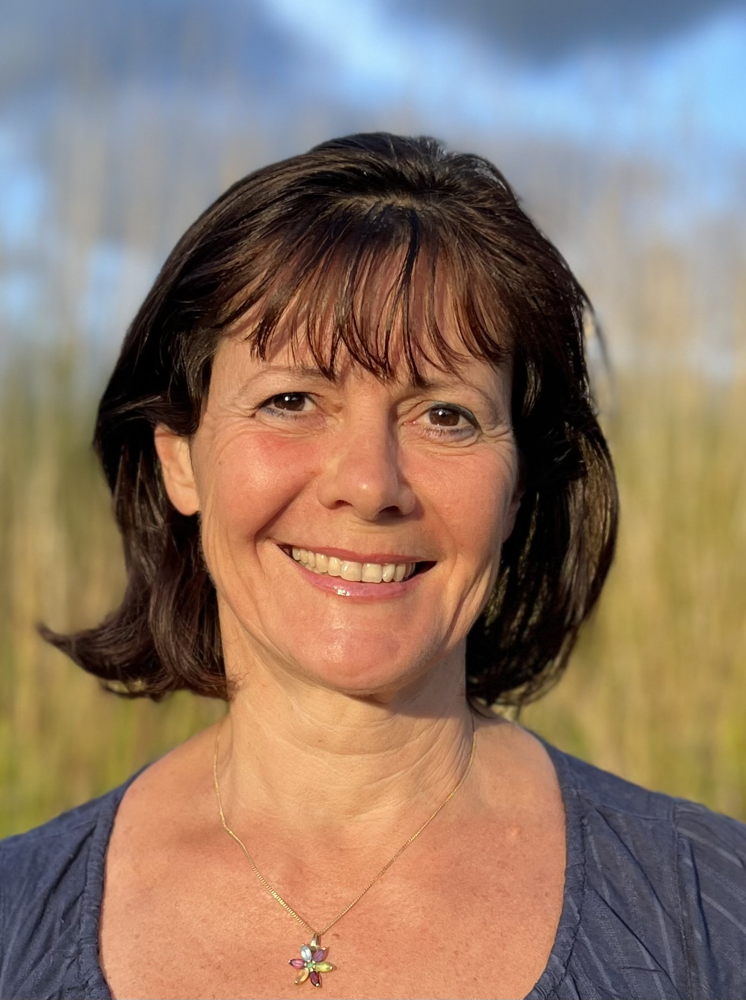
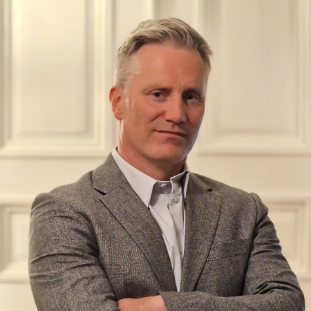
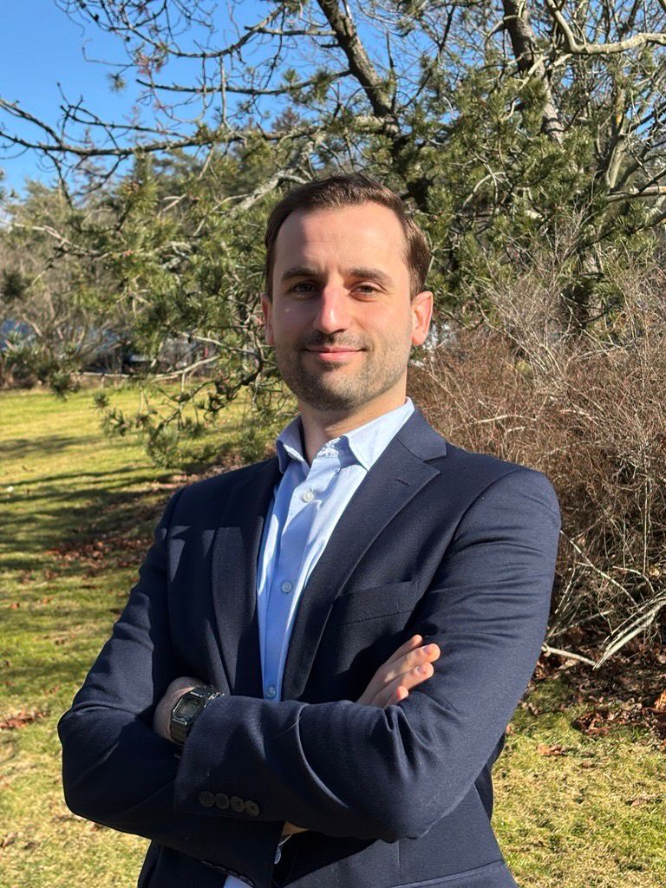
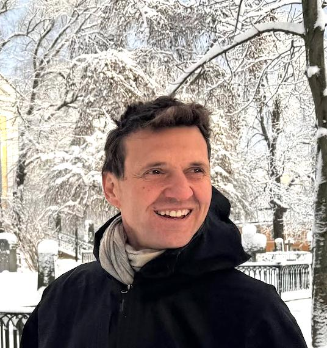

Côme Frachon
Tête de liste ASFE Suède
Une équipe de femmes et d'hommes engagés, installés en Suède et profondément attachés à la communauté française.
« Vivre à l'étranger ne doit jamais signifier être éloigné des services, de l'écoute ou du soutien de la France. »

Notre Vision
Vivre en Suède est une chance. Notre communauté française y est dynamique, engagée et contribue chaque jour au renforcement des liens entre la France et la Suède. Mais l'expatriation s'accompagne aussi de défis bien réels.
C'est pour répondre concrètement à ces enjeux que nous avons choisi de présenter notre liste ASFE aux élections consulaires en Suède. Notre objectif est simple : porter votre voix, défendre vos intérêts et améliorer concrètement votre quotidien.
Pragmatisme
Des solutions concrètes et réalistes face aux difficultés rencontrées par les Français de Suède. Nous agissons, pas seulement en paroles.
Proximité
Des représentants accessibles, à l'écoute et disponibles. Nous sommes sur le terrain, en Suède, à vos côtés.
Entraide
Renforcer les liens entre Français et favoriser la solidarité au sein de notre communauté dynamique et soudée.
Nos Propositions
Pour les années à venir, plusieurs priorités sont essentielles pour notre communauté. Nous nous engageons à agir autour de cinq piliers clés.
Services Consulaires
Améliorer l'accès aux services consulaires et réduire les délais de traitement des démarches administratives.
- Faciliter l'accès aux services consulaires pour les Français vivant dans toute la Suède.
- Soutenir le développement de solutions pratiques, comme les tournées consulaires et l'amélioration des prises de rendez-vous.
- Relayer auprès du Consulat les difficultés rencontrées par les usagers afin d'améliorer la qualité du service rendu.
Éducation Française
Soutenir l'enseignement français en Suède et faciliter la reconnaissance des diplômes.
- Soutenir les établissements d'enseignement français et les initiatives éducatives francophones.
- Accompagner les familles dans leurs démarches liées à la scolarité et aux bourses scolaires.
- Favoriser la reconnaissance des diplômes et la continuité des parcours éducatifs entre la France et la Suède.
Solidarité et Communauté
Renforcer l'entraide entre Français et encourager des initiatives et événements fédérateurs.
- Encourager les initiatives associatives et les réseaux d'entraide entre Français.
- Soutenir les actions de solidarité envers les Français en situation de vulnérabilité.
- Organiser ou accompagner des événements qui renforcent les liens entre les membres de la communauté française.
Entreprises et Entrepreneurs
Accompagner les entrepreneurs français et favoriser les échanges économiques franco-suédois.
- Soutenir les initiatives qui favorisent les échanges économiques franco-suédois.
- Faciliter la mise en réseau entre entrepreneurs, professionnels et institutions.
- Valoriser les entreprises françaises qui participent au rayonnement de la France en Suède.
Jeunesse Française
Aider les jeunes Français à s'intégrer, s'orienter et accéder à des réseaux professionnels et associatifs.
- Développer des initiatives favorisant l'intégration et l'orientation des jeunes Français.
- Encourager les réseaux professionnels et les programmes de mentorat.
- Soutenir les projets associatifs et culturels portés par la jeunesse.
Notre Équipe
Nos parcours sont différents — entrepreneurs, parents, professionnels, acteurs associatifs — mais nous partageons la même conviction : les Français de l'étranger ont besoin de représentants proches, accessibles et efficaces.
Côme Frachon
Côme Frachon, Français expatrié, a vécu aux États-Unis pendant 9 ans avant de s'établir en Suède en 2006. Fort de près de 20 ans d'expérience dans ce pays, il bénéficie d'une véritable double culture franco-suédoise et est profondément enraciné dans la communauté locale.
Professionnel dans le domaine de l'événementiel et du marketing, Côme joue un rôle actif dans la promotion de la France en Suède. Engagé dans plusieurs organisations franco-suédoises, il souhaite mettre son expérience et son énergie au service de tous les Français en Suède.

Delphine Raimbault
15+ ans en Suède · Enseignante · Élue locale
Installée en Suède depuis plus de 15 ans, après avoir vécu en Colombie, au Brésil et en Espagne, Delphine porte un parcours profondément international et engagé. Son expérience l'a conduite à travailler à Stockholm, notamment auprès des ambassades de Tunisie et du Burundi.
Enseignante de français et de FLE depuis les années 1990, elle a toujours placé la transmission et le dialogue interculturel au cœur de son engagement. Élue et engagée dans la politique locale de sa commune en Suède, elle souhaite mettre son expérience et son sens du terrain au service des Français établis en Suède.

David Przybylak
Triple nationalité · Ingénieur · IA
Franco-suédois, de triple nationalité française, norvégienne et suédoise, David est parfaitement bilingue et vit en Suède de longue date. Son histoire avec la Suède commence en 1998, lorsqu'il est venu à Göteborg comme étudiant d'échange ERASMUS à Chalmers.
Ingénieur de formation, diplômé de l'ENST Bretagne (IMT Atlantique) et titulaire d'un M.Sc. à Chalmers, il a développé l'essentiel de sa carrière en Suède dans la conception de systèmes et le développement logiciel. Il s'engage pour une représentation accessible, pragmatique et proche du terrain.

Florian Michaud
Göteborg depuis 2018 · Commerce · Géopolitique
Florian Michaud, originaire de Charente-Maritime, est diplômé de l'école de commerce de Rennes. Installé à Göteborg depuis 2018, il est un Français de l'étranger engagé, attaché au rayonnement de la France et à la défense des intérêts de nos compatriotes.
Fort de son parcours académique, Florian a développé des compétences solides dans les domaines géopolitique, économique et social. Il souhaite mettre son énergie, ses connaissances et son sens de l'engagement au service de la communauté française de Suède.

Mathieu Castelli
Stockholm · Entrepreneur jeux vidéo · 18 ans exp.
Mathieu Castelli vit à Stockholm avec sa femme et leurs trois enfants depuis sept ans. Auparavant, il résidait à Montréal. Fort d'une expérience de 18 ans en tant qu'entrepreneur, Mathieu a dirigé un studio de jeux mobiles avant de rejoindre un studio spécialisé dans la réalité virtuelle.
Passionné par les enjeux de la communauté française à l'étranger, Mathieu est déterminé à promouvoir des initiatives qui renforceront les liens entre les expatriés et leur pays d'origine.
Mathilde Baille
Västra Götaland · Hôtellerie de luxe · Commerciale
Cela fait 2 ans et demi que Mathilde est arrivée avec sa famille en Suède, dans la région de Västra Götaland. Après treize années dans l'hôtellerie de luxe en France et à l'international — notamment au Canada, aux États-Unis et en Australie — elle a entamé un nouveau chapitre en Suède en tant qu'Assistante Commerciale dans l'industrie papetière pour le marché français.
En vivant à l'étranger, elle a pris conscience de l'importance de rester connectée à notre culture, à notre langue et à notre communauté. Elle s'engage avec sincérité, énergie et sens du collectif.

Morgane Bigot
4 ans en Suède · Électronique · Semiconducteurs
Morgane Bigot, originaire de France, a découvert l'Allemagne avant de s'établir en Suède il y a quatre ans grâce à une opportunité professionnelle. Professionnelle dans le secteur de l'électronique et des semiconducteurs, Morgane est régulièrement confrontée aux enjeux géopolitiques mondiaux.
Engagée et motivée, Morgane souhaite mettre son expérience au service des Français qui souhaitent s'installer en Suède, offrir un soutien administratif et partager sa connaissance de la culture suédoise.
Notre Engagement
Vivre en Suède est une chance. Notre communauté française y est dynamique, engagée et contribue chaque jour au renforcement des liens entre la France et la Suède. Mais l'expatriation s'accompagne aussi de défis bien réels : démarches administratives parfois complexes, accès aux services consulaires, scolarité des enfants, intégration des jeunes ou encore soutien aux entrepreneurs.
« Les Français de l'étranger ont besoin de représentants proches, accessibles et efficaces. »
Nous sommes une équipe de femmes et d'hommes engagés, installés en Suède et profondément attachés à la communauté française qui y vit. Nos parcours sont différents — entrepreneurs, parents, professionnels, acteurs associatifs — mais nous partageons la même conviction.
Notre engagement repose sur une idée claire : vivre à l'étranger ne doit jamais signifier être éloigné des services, de l'écoute ou du soutien de la France. Face à la dématérialisation croissante et à l'éloignement administratif, nous voulons être des relais actifs et disponibles, capables de transformer les difficultés rencontrées par les Français de Suède en solutions concrètes.
« Être conseiller des Français de l'étranger, c'est avant tout être présent, à l'écoute et utile. »
Notre engagement est clair : être des représentants accessibles, actifs et proches de vous, capables de défendre vos intérêts et de faire avancer concrètement les dossiers qui comptent pour les Français de Suède.
En votant pour la liste ASFE, vous choisissez une équipe engagée pour représenter et servir la communauté française en Suède.
Le Rôle d'un Conseiller
Comprendre les missions et responsabilités d'un conseiller des Français de l'étranger.
Important : Pour voter aux élections consulaires, vous devez être inscrit(e) sur le registre des Français établis hors de France. Cette inscription est gratuite et obligatoire.
Missions du Conseiller
Représentation
Représenter les Français de Suède dans les instances nationales et porter leur voix.
Propositions
Formuler des propositions concrètes pour améliorer la vie des expatriés français.
Consultation
Être consulté sur les projets de loi concernant les Français de l'étranger.
Suivi
Assurer le suivi des dossiers et maintenir le dialogue avec les administrations.

L'ASFE
Alliance Solidaire des Français de l'Étranger
L'ASFE est le seul mouvement politique dont l'unique objectif est de défendre les intérêts des Français établis hors de France. Indépendante de tout parti national, l'ASFE agit au quotidien pour défendre, accompagner et soutenir les 2 à 3,5 millions de Français expatriés dans plus de 190 pays.
Avec trois sénateurs élus et des conseillers consulaires présents sur tous les continents, l'ASFE est un relais concret auprès des institutions françaises pour les questions d'éducation, de protection sociale, de fiscalité et de vie quotidienne à l'étranger.
Découvrir l'ASFENous Contacter
Vous avez des questions, des propositions ou vous souhaitez vous engager à nos côtés ? N'hésitez pas à nous écrire.
Rejoignez-nous
Votez le 31 mai 2026
Élections des conseillers des Français de l'étranger — Suède